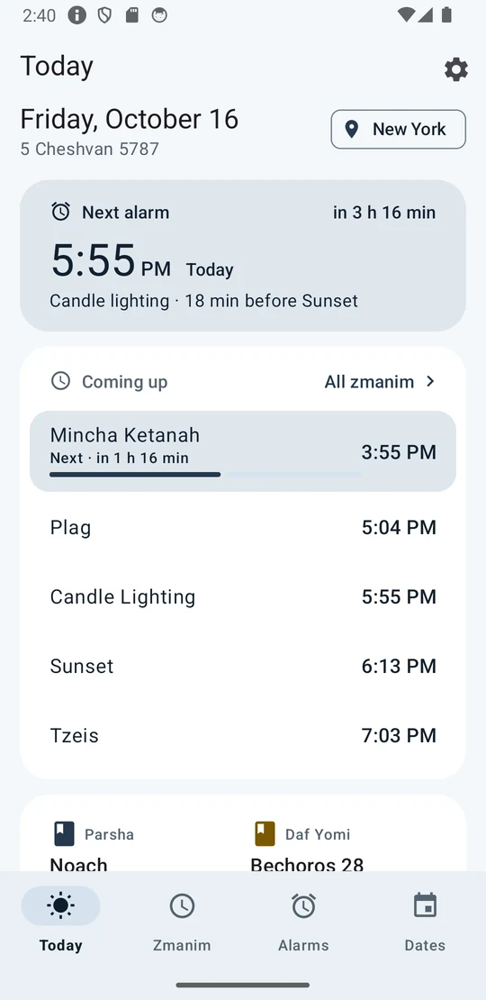
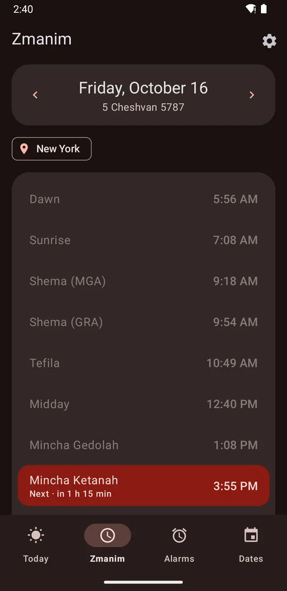
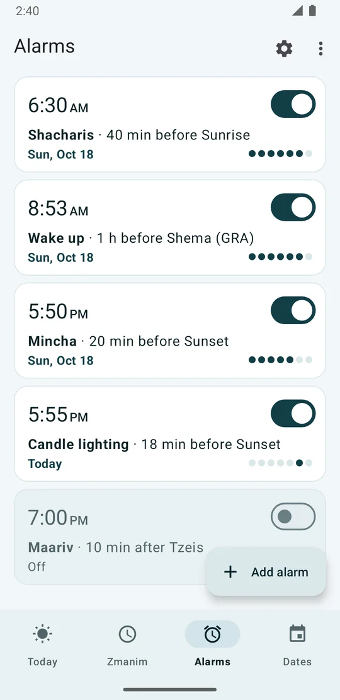
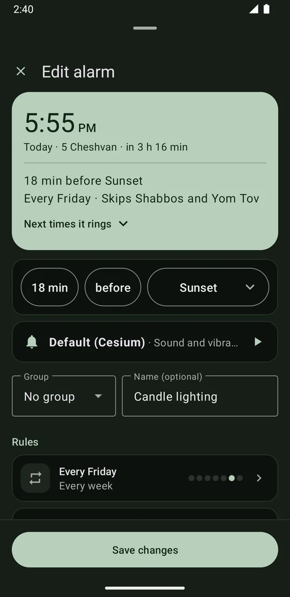
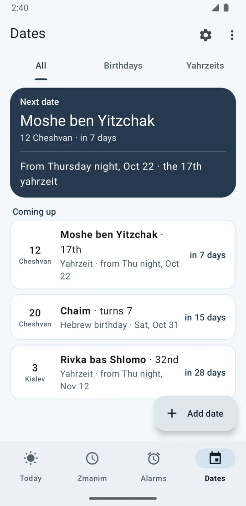
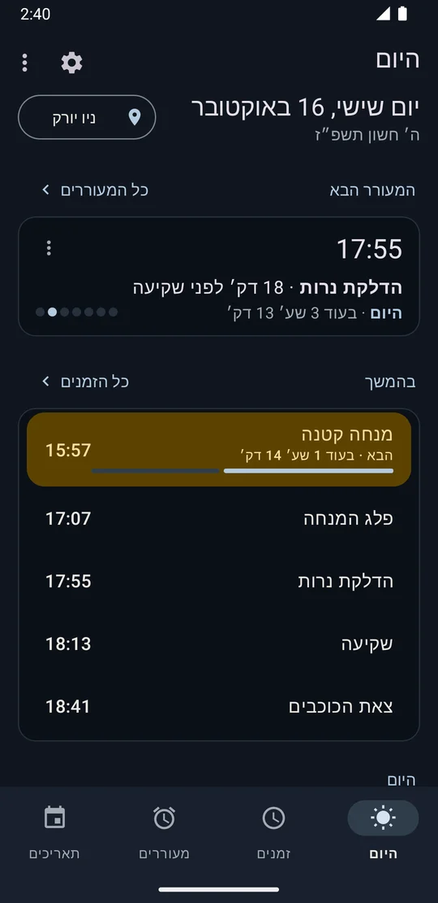

Your phone, set to zmanim.
Set an alarm for “15 minutes before candle lighting” or “at sunrise” once, and it rings at the right time every day, wherever you are. It stays quiet on Shabbos and Yom Tov unless you tell it otherwise.
Looks the way you like
The app follows your phone’s light or dark setting, or you can choose Light or Dark in Settings. On Android 12 and newer it also takes its colors from your wallpaper. Turn that off to keep the app’s own red. Use it in English or Hebrew.






Everything the day needs
Alarms by zman
Pick any zman, then minutes or hours before or after it. Repeat on chosen days, add a label, choose the sound. The alarm recalculates every day.
Quiet on Shabbos and Yom Tov
Alarms skip Shabbos and Yom Tov automatically, with one day in Israel and two outside. Turn ringing back on for any single alarm, or add erev Yom Tov to a Friday alarm.
Your shitos, your minhag
Choose the opinions you follow (MGA or GRA, dawn and nightfall, candle lighting minutes, when Shabbos ends). Tap any zman to see how it is calculated. Compare with my luach finds which opinion your printed calendar uses.
Hebrew calendar
- Hebrew date, parsha, holidays, fasts and Rosh Chodesh
- Erev Pesach chametz times
- Daf Yomi and other daily learning
- Yahrzeits and Hebrew birthdays, each year on the right date
Reminders
- Sefiras HaOmer, in Hebrew and English
- Chanukah candles, Kiddush Levana, Eruv Tavshilin
- Tal U’matar and Birkas Ha’ilanos
- Optional Do Not Disturb for Shabbos
Built to ring
Alarms use Android’s exact alarm clock, so they ring even when the app is closed. An Alarm check finds settings that could stop an alarm and fixes them. When you travel, times follow your location. No account, no ads, and your data stays on your phone.
If something goes wrong
An alarm didn’t ring
Run Settings › Alarm check first. Then open Settings › Alarm history and tap Send report, so we can see what happened.
A time doesn’t match my luach
Open the zman and tap Compare with my luach to find which opinion your calendar uses. Still off? Email us the date, place and time you expected.
Updating to a new version
Download the new APK from the download page and install it the same way. Your alarms and settings are kept.
Try the beta
Not on the Play Store yet. Installing straight from our site takes about two minutes.
Questions, feedback or a wrong time?
Email us any time. If a zman doesn’t match your luach, include the date, place and time you expected.